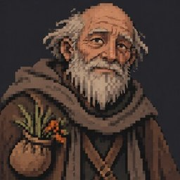

At the fire
Slide the picture. Tap a building or a place to walk over to it.
Your glim
Everyone here has a glim, a small light that has kept beside them since they were children. Yours came out of a Tallyman's cage and stayed. A glim lives on its person's walking: every step you take keeps it bright, even the ones outside a task. Every 1,000 counts as a camp chore done and adds one to whichever store is lowest.
Ask your glim
It has no words yet. Ask it something it can answer with yes or no, and listen. Its one sound is a doot, the same doot it makes when you take a step. Two doots with the second one higher is yes. Two with the second one lower is no. Three doots are the soft answers: the last one higher is maybe, the last one lower means it is not sure. Turn your ring switch on to hear it.
Since you arrived
In your pack
Your place in camp

Tobiah's rounds
Tobiah sat out one winter with his knee and it never came right. His rule for you: do not stay down for a whole hour. Every hour of the day in which you get up and walk a round of the camp counts as a chore done, and the fourth round of a day earns his trust and a bundle of herbs. A round is three minutes on your feet.
Tobiah calls you
Count real steps from Health instead (Safari only)
Stores
What the camp is building
Bring an idea from your world
You know things nobody here does. Pitch one to a villager whose trust in you is 3 or more. If they believe it can be made with what the camp has, it becomes something to build. Nothing exists here until it is made here.
Journal
The old empire
The known world
Your phone
It died the night you reached Hollow Ash. Nobody here knows what it is. Until something charges it, this is where the things from outside the story are kept.
Villager voices
The key is kept only in this browser and is sent only to Anthropic when a villager speaks. Set a monthly spend limit on the account that owns it.
Carry your save to another place
The game on your Home Screen and the game in Safari keep separate saves. Copy your save here, open the other one, and bring it in there. Your API key is not part of it.
Your home location and progress are saved only in this browser on this phone. Destinations come from OpenStreetMap contributors and are not checked by anyone. Use your own judgment about where it is safe and allowed to walk, and skip any place that isn't.